Леди Сильвана Ветрокрылая (англ. Sylvanas Windrunner), Королева банши – верховный правитель Отрекшихся, одной из самых могущественных групп нежити на Азероте. При жизни она была предводителем следопытов Луносвета, и её боевому мастерству не было равных. Во время Третьей войны она храбро защищала Кель'Талас от вторжения Плети, ведомой рыцарем смерти Артасом Менетилом. Сильвана была убита в сражении, и Артас, не позволив ей просто уйти, вырвал её душу и превратил в банши – хитрое и мстительное существо, служающее Королю-личу и преисполненное ненавистью.
Когда контроль Короля-лича над его слугами ослаб, Сильвана получила долгожданную свободу и смогла вернуть своё тело. Пообещав отомстить за своё убийство, она объединила свободную нежить и повела их на войну против Плети. Так появились Отрекшиеся, и Сильвана стала их королевой. В будущем Отрекшиеся стали частью Орды и помогли одержать победу над Королем-личом на северных пустошах Нордскола.
Сильвана столкнулась со множеством проблем. Восстание в её рядах привело к гибели многих воинов Орды, и теперь королеве банши не доверяют многие из её союзников. Сильвана начала укреплять свою территорию в Тирисфальских лесах, чтобы создать правильное государство для своего народа. Хотя она и уверяет, что её лояльность к Орде не ослабла, кое-кто не уверен в её истинных намерениях.
После падения Артаса Менетила Сильвана узнала, что она тоже проклята и должна будет провести вечность среди тьмы и пыток в загробной жизни. Валь'киры предложили ей своё служение, и Сильвана смогла вернуться в мир живых и будет оставаться в нём настолько долго, как существуют её валь'киры. Зная о судьбе, которая неизбежно постигнет её, Сильвана начала больше ценить Отрекшихся, которые стали защитой от ужасающей тьмы. Сильвана возглавила свой народ в агрессивных нападениях на территории Лордерона, и значительная часть материка Восточных королевств уже находится под её контролем.
Сильвана принимала участие в битве на Расколотом берегу, где Альянс и Орда пытались противостоять Пылающему Легиону. Она отдала команду к отступлению, видя, что Вол'джин ранен и что другие вожди почти лишились сил. Хотя из-за поступка Сильваны Орду удалось сохранить в тот день, отступление Орды поставило Альянс в уязвимое положение и, возможно, стало причиной гибели Вариана Ринна. В Оргриммаре Вол'джин, умирающий от отравления Скверной, объявил, что Сильвана станет его преемницей на должности вождя Орды. У погребального костра Вол'джина Сильвана произнесла воинам Орды речь о том, что они должны помочь ей отомстить за гибель прежнего вождя.


 , Возмездие 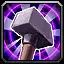
, Возмездие 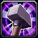

 , Огонь
, Огонь  , Лед 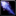
, Лед 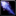


 , Запрет 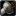,Коварство 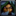
, Запрет 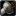,Коварство 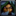

 ,Свет 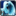,Тьма 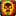
,Свет 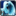,Тьма 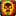


 ,Мороз
,Мороз  ,Нечестивый
,Нечестивый 


 ,Защитник 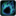,Восстановление
,Защитник 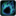,Восстановление 


 ,Стрельба 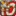,Выживание 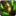
,Стрельба 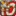,Выживание 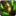


 ,Ткач тумана 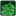,Ветроход
,Ткач тумана 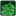,Ветроход 


 ,Разрушение
,Разрушение 


 ,Ярость 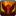,Защита
,Ярость 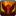,Защита